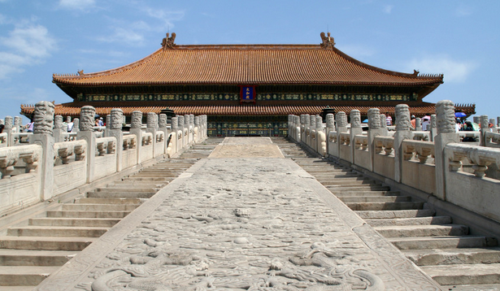
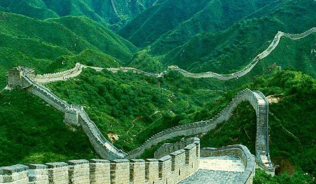

北京故宫，全名北京故宫博物院，旧称为紫禁城，位于北京中轴线的中心，是中国明、清两代24位皇帝的皇家宫殿，是中国古代汉族宫廷建筑之精华，无与伦比的建筑杰作，也是世界上现存规模最大、保存最为完整的木质结构古建筑之一。

长城（ The Great Wall），又称万里长城，是中国古代军事防御工程。长城修筑的历史可上溯到西周时期，著名的典故“烽火戏诸侯”就源于此。春秋战国时期列国争霸，互相防守，长城修筑进入第一个高潮，但此时修筑的长度都比较短。秦灭六国统一天下后，秦始皇连接和修缮战国长城，始有万里长城之称
